Web exclusive essay
© 2019 Stanford University Chinese Railroad Workers of North America Project
Ju Li and Linda Ye
December 2017
Abstract
This paper has benefited from the support of Stanford University’s Chinese Railroad Workers in North America Project. We are grateful to Gordon Chang, Shelley Fishkin, Hilton Obenzinger, Roland Hsu, Dongfang Shao, and Gabriel Wolfenstein for valuable comments and conversations that have benefited this paper. We also thank Kevin Hsu for editorial comments. We thank Larry DeLeeuw for his generous hospitality during our field research visits in Lovelock, NV and for valuable conversations regarding the Chinese cemetery in Lovelock.
I. Introduction
A complete picture of the Central Pacific Railroad (CPRR), first laid in 1863 by Chinese railroad workers largely employed under the Central Pacific Railroad Company (CPRC), remains elusive. While historical photographs of the CPRR construction have long existed, the precise geographic locations of these photos are often unknown. In this paper, we attempt to fill a gap in this area and further reconstruct the original railroad route through field and archival work as well as the use of Geographic Information Systems (GIS).
Our fieldwork-based photo comparisons achieve at least two goals. First, they help more precisely identify the locations of historical photographs of the original railroad and improve our understanding of these locations. With the aid of GIS technologies, we were able to analyze and identify the exact coordinates of virtually all the photographs that Alfred Hart had taken during the time he served as the official photographer of the CPRR. The complete list of coordinates for these locations is shown in Table 1. This effort also supports future research on this topic, as the locations in our fieldwork cover the full span of the CPRR construction route and prompt new questions regarding the evolution of geographic landscapes and human diaspora.
Second, these comparisons shed light on the lives of the railroad workers, the subject of a burgeoning area of research, notably under Stanford University’s Chinese Railroad Workers in North America Project. We have generated side-by-side photo comparisons for the complete set of Hart’s collection of 364 photos, and discuss a selection of them in this paper. The selected photographs are grouped under three broad themes: rail site location, daily life of workers, and engineering achievement.
II. Historical versus present-day photos
Alfred Hart, the official photographer for the CPRC, recorded 364 photographs (referred to as stereoviews) during the period 1864-1869. Hart’s photos were taken from various angles, often from locations situated on jagged terrain especially prevalent in the sections of railroad built across the Sierra Nevada mountain range. After a century and a half of geological change, including weathering and erosion, and civil engineering developments that caused the landscape to evolve, it is often difficult to identify the precise locations of Hart’s photos without in-depth, and often repeated, field visits. In this project, we were able to travel across and cover an extensive area that included the locations covered by Hart’s photos, and even beyond. Additional locations we have found and detail include Echo Canyon, where photographer Andrew J. Russell of the Union Pacific Railroad Company captured photos of Chinese workers, and Palisades, Nevada (now called Palisade), a former railroad town featured in an unnamed postcard. These photos raise some intriguing questions related to aspects of the Chinese railroad workers’ lives that were not documented by Hart, who had an institutional mandate from the CPRC to focus his photography on the CPRR construction route.
Our photo comparatives and field work advance understandings of the Transcontinental Railroad in a number of ways. First, over a period of five years, we have walked the original railroad route five times, including repeated visits to the locations that Alfred Hart photographed. Our on-site fieldwork incorporated the use of satellite and GPS tracking to help us pinpoint the geographic coordinates of locations in historical photographs and then take our own photographs at the same locations.
We complemented our on-site fieldwork with archival visits to various national and local institutions. These included the Library of Congress, California State Railway Museum, Humboldt Museum, Golden Drift Museum, Golden Spike National Historic Site, and Lovelock Historical Society, among others. Our extensive archival research and interactions with staff in these institutions have yielded valuable information, such as interpretations of Hart’s photos based upon secondary sources, and reinforce our fieldwork.
Our approach can be characterized as combining “historiophoty” with onsite fieldwork (White 1988). This holistic effort leads to a more precise understanding of the locations along the original railroad route, as well as its relationship to the Chinese railroad workers’ lives and the engineering progress at the time.
These historical photos reveal more than just locations; a number of photos in Hart’s collection feature individuals in action. Combined with our field visits, we can also infer additional qualities of the environment around the railroad construction sites, such as seasonal weather patterns or the changing contours of landscapes. These types of environmental information offer insights about the speed and technological progress of railroad construction, which also help reveal how the daily lives of the railroad workers were impacted.
III. Case studies
In this section, we use our analysis of several carefully-chosen images to demonstrate how photographic evidence can shed light on the lives of the Chinese workers who worked to build the CPRR. We group the photo comparisons under three themes: location, daily life, and engineering achievements. These themes are interrelated. For example, the locations of these photographs often define the types of engineering challenges that had to be overcome, and to which the railroad workers had to adapt to in their everyday lives.
Analyzing a set of multiple photos, beyond single pairings of historical and contemporary photos, is also worthwhile. For example, to accurately identify the present-day location of some of Hart’s photos, we often checked the locations of other photos close by in Hart’s photo sequence.
Similarly, a minute detail of a close-up subject in a photo can often be better understood by considering its broader surroundings through other photos. This speaks to the importance of comprehensive analysis in synthesizing elements beyond the information derived from a single site or location (Dixon 2014; Orser 2010).
We begin our discussion with Photo 327 “Chinese Camp. At End of Track,” which demonstrates why repeated field visits are crucial to location identification and contextual understanding. We visited the depicted valley five times to finally pinpoint the present-day location featured in this photo (currently in wide circulation). We have identified the location as the hill of the south bank of the Humboldt River. We are able to infer several aspects of the Chinese railroad workers’ lives from the photo. In the original photograph, we counted roughly 47 tents where Chinese workers would have lived. Assuming about 10 individuals lived in a tent, there would have been an estimated 500 Chinese individuals in this camp1. In contrast, the white workers and engineers lived in the train, a much more substantial shelter.
Hart 327
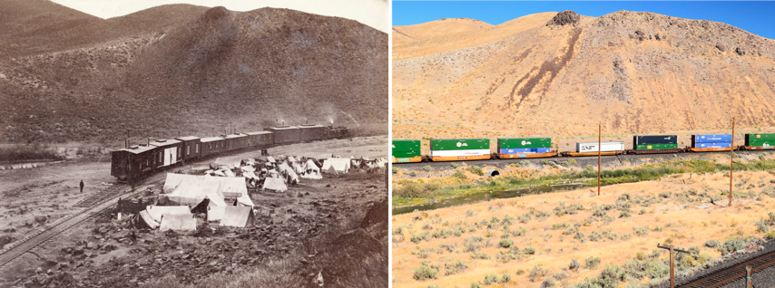
This particular instance of disparity in living conditions occurred during winter, as evidenced by the smoke in the photograph. Chinese railroad workers living in the tents did not have access to indoor heating, contrary to those who lived in the train cars. If we zoom in on the photo, we can see that linens were organized neatly, suggesting that the maintenance of sanitary conditions was important to the Chinese. Given the nearby presence of the Humboldt River, convenient access to water allowed the workers to clean their clothing easily. In the present day, the Humboldt River remains an accessible source of water.
Photo 335
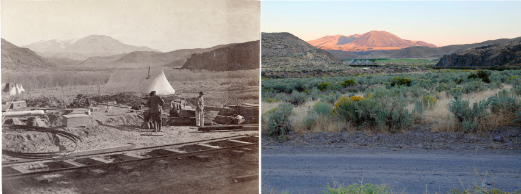
Photo 334
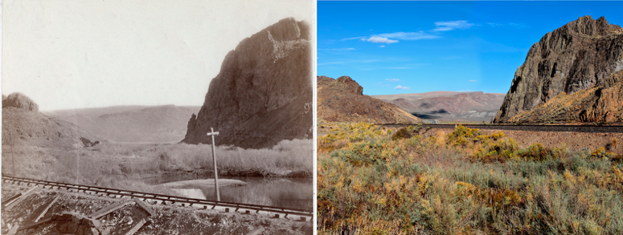
Photo 336
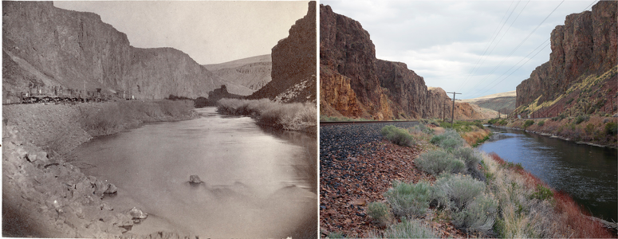
As we delved further in our research, “Trout Creek Mountain” in Photo 335 emerged as an importance reference point. Based on a Google Map search, there is a Trout Creek Mountain located in the state of Oregon, two hundred miles northwest of Ten Mile Canyon. But given the discrepancy between the physical distance and the distance inferred from Hart’s photos, the search result location could not be the same as the one labeled in the photo. On our fifth trek, we found the location with some inspiration. What was different this time? Previously, we fell into the fallacy of searching for the location by walking along the present-day rail track. However, Hart’s photo location is far from this rail track, as the original rail track has long been abandoned and is several hundred meters away from the present-day track. Such changes to the track are also directly visible in Photo 169, in which the track in the Yuba Valley is now completely gone. In some instances, even the geological landscape has changed (Photo 173). The railroad in Photo 335 has been reworked a few times or has been relocated, complicating the identification of its present-day location. However, through this repeated search process, we have not only pinpointed the location of Photo 335, but also obtain a clearer view of the evolution of the railroad tracks over time.
Photo 169
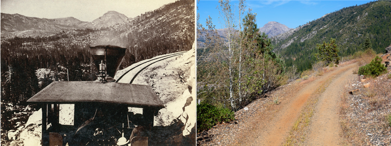
Photo 173
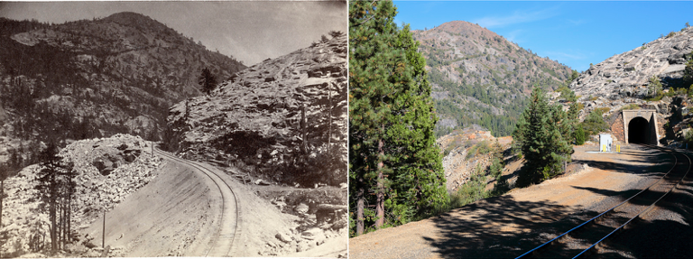
Lastly, Hart described Photo 335 as “building water tank”. Considering this photo alone, it is not immediately apparent what the metal material on the ground may be used for. Referencing Photos 318, “Lower Crossing Humboldt River” and 319 “Winnemucca Depot,” we see large water barrels (towers) bound by three to five pieces of metal hoops. We can then see that the raw materials on the ground in photo 335 were likely used to construct water barrels, specifically to form the metal hoops for the barrels, similar to the ones depicted in Photos 318 and 319.
We will now focus on the two individuals in Photo 335. While it is uncertain whether the one dressed in dark clothing (with back facing the photo) is a Chinese railroad worker, the other dressed in light clothing is certainly one, identifiable by the traditional attire3. This identification attests to the fact that Chinese railroad workers did not just perform low-skill-intensive tasks required of railroad construction, but also served in positions that required blacksmithing and carpentry skills. The boxes featured in the photo are likely tool boxes. The water barrels were used to supply water for steam trains and used as drinking water, which was quite scarce given the high desert terrain (Ambrose 2000). Furthermore, the local sources of water in many locations in Nevada were also undrinkable, necessitating the transport of water from California via existing trains.
Lastly, we can see that seasonal patterns influenced the work of the Chinese laborers. The construction of this particular part of the railway took place in November 1868. A glimpse at Trout Creek Mountain in the background reveals a thick layer of snow. The harsh winter conditions provoked a sense of urgency in maintaining a steady source of water, especially as the workers faced leaving the area containing the Humboldt and Truckee Rivers, two major water sources along the route.
Photo 318
Photo 319
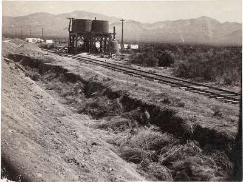
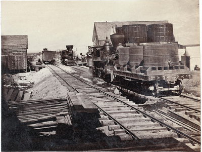
Great Eastern
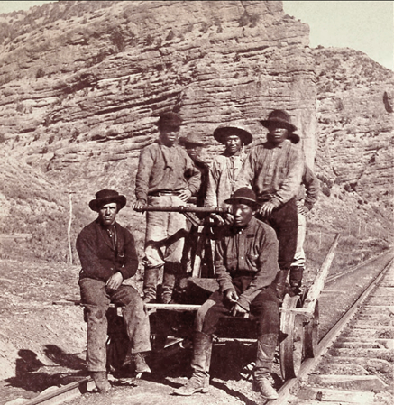
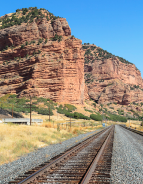
The original photo contains seven individuals, five of whom are Chinese railroad workers. At the time, there was no universal uniform assigned to the Chinese workers; as depicted, many still dressed in traditional Chinese button-down clothing. The featured rail track was under the purview of the Union Pacific Railroad Company. Historical archives have shown that Chinese workers did not participate in the original construction of the Union Pacific Railroad. However, the reason they appear in the photo is that they participated in the maintenance of this track after the construction of the Transcontinental Railroad was completed. This is consistent with newspaper archives that suggest some Chinese railroad workers worked on the Union Pacific Railroad after the completion of the CPRR: “‘Corinne, (Utah) June 29.’ Three car loads of Chinamen leave here July 1 to commence work on the Union Pacific Railroad. After this gang is distributed the China force on that road will reach from Ogden to Bitter Creek, a distance of 250 miles” (PLACER HERALD, July, 1869). This photo shows an instance in which comparison with historical archives is helpful for uncovering nuances about the Chinese railroad workers that might otherwise be ignored.
Photo 317
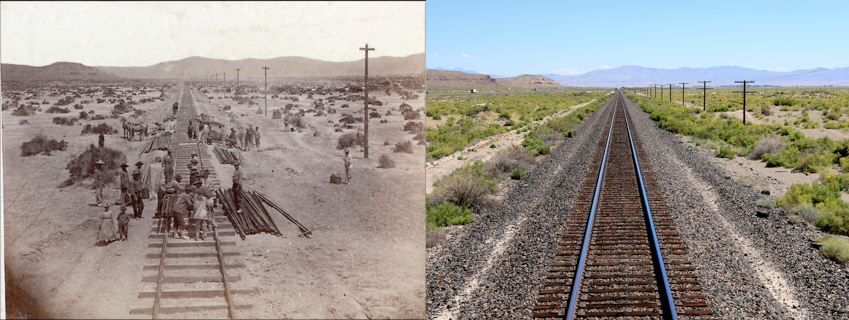
Photo 204
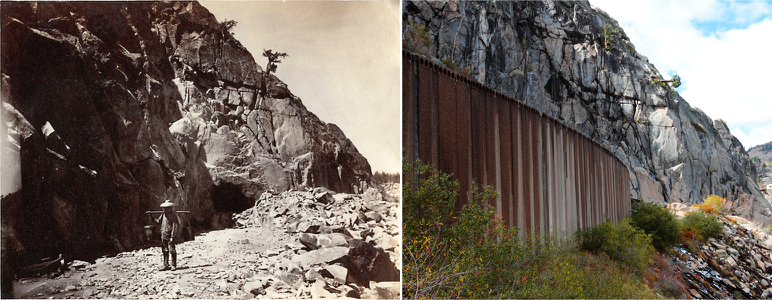
Photo 313
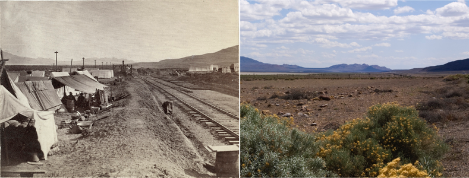
To a large extent, the daily lives of the Chinese railroad workers were driven by the engineering needs and toil required by the construction efforts. The ensuing discussion provides glimpses into this dimension. Through these visual comparatives, we can find traces of the American economy and engineering technologies at the time of construction, as well as understand how their evolution shaped the appearance of their contemporary locations.
Consider photo 328 “Powder Bluff. West end of 10 Mile Canyon.”
Photo 338
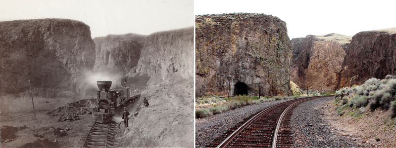
Photo 89
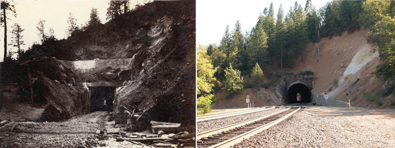
Photo 211
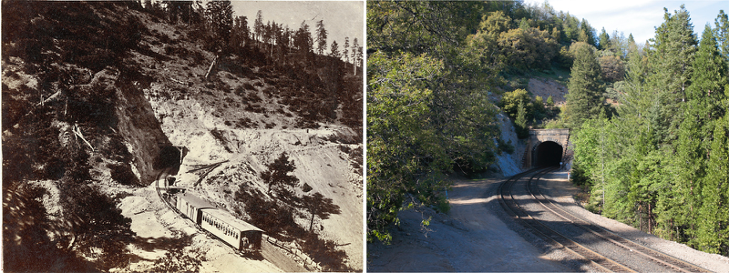
Photo 12
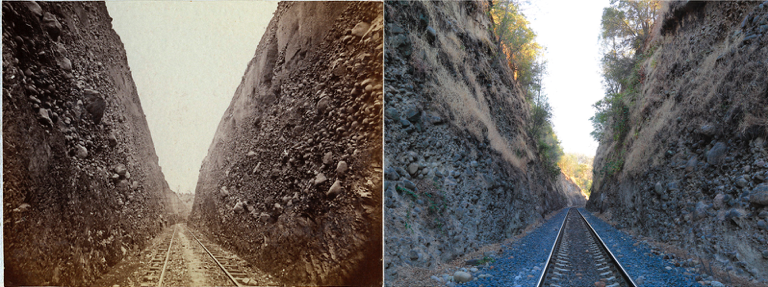
Photo 338
Palisades, Nevada
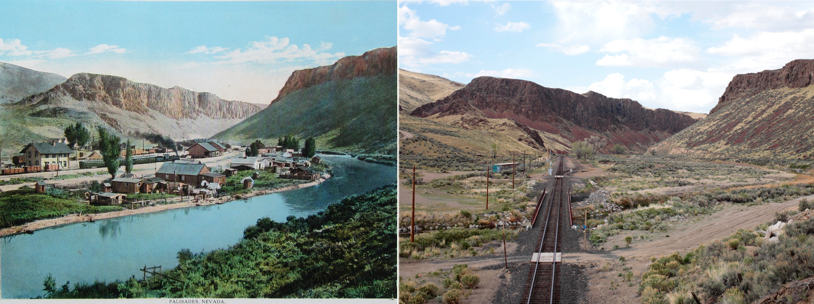
Photo 825
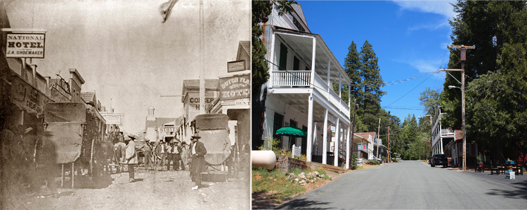
Photo 320
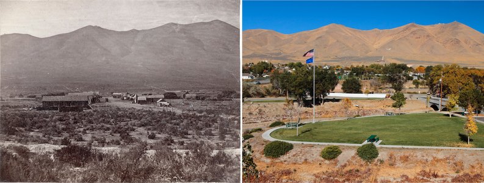
Photo 256
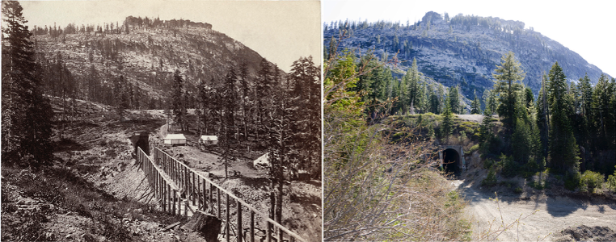
Similarly, when comparing the original photo of Tunnel No. 15 (Photo 269) with today’s photo, we see that the tunnel and the hill covering it have been removed to allow for a double-tracked railroad. The removal of the hills is reflective of improved earth-moving, which now allows for the construction of open tracks rather than tunnels through this terrain.
Another example of differences in construction over time is the American River Bridge (Photo 229), a construction effort led by Charles Crocker. The same site has two parallel bridges today. One is a small remnant of the original bridge, while the other is a modern version. About three miles downstream from this river, there exists a gold mine that was exploited during the 1848 gold rush.
Photo 269
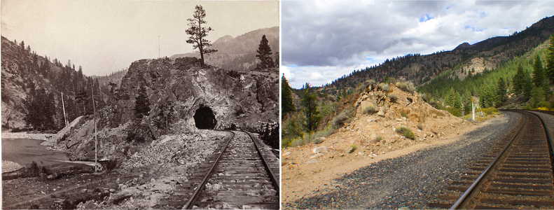
Photo 229
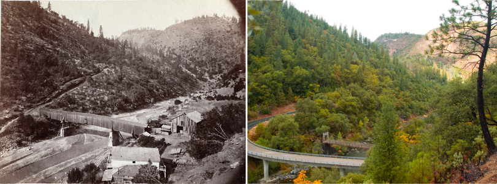
The roadbed carved out of granite at Cape Horn also illustrates an engineering feat (photo 57), as does the roadbed at Alta (Photo 70). The hardship and toil that the Chinese railroad workers suffered were embodied in their achievements, such as their famed feat of 10 miles laid in one day on April 28, 186913.
In the process of construction, the lives of many Chinese railroad workers were lost14. Other Chinese later settled in the locations of these construction sites, such as in Lovelock, NV. This is most vividly illustrated by the Chinese cemetery there, the original photo of which was found at the Lovelock Historical Society. The cemetery remains in present day, and is known to be in poorer condition than the nearby cemetery for the non-Chinese, visible in the distant back of its photo (below). In person, we counted about forty graves in this area, but many more workers are buried there beyond the visible number of graves15.
Photo 57
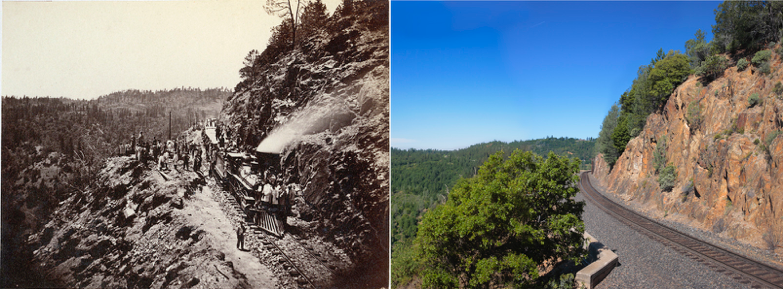
Photo 70
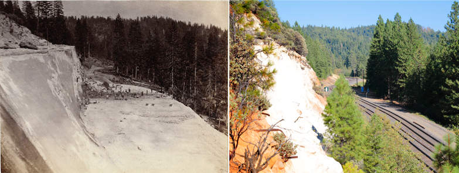
10 Miles Sign
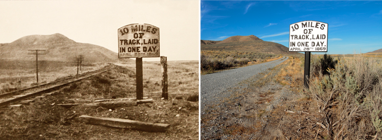
Photo 350
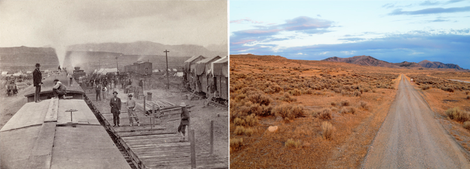
Chinese cemetery
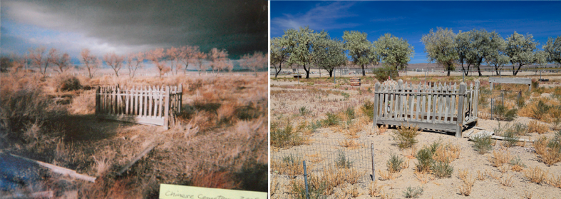
IV. Conclusion
This study presents a diverse set of photo comparisons of sites along the Central Pacific Railroad. We have conducted extensive field visits and used GPS tracking to pinpoint geographic coordinates of the locations of the historical railroad photos. Aided by the applications of GIS, we then built on our fieldwork to gain further information about the sites on the original railway and conduct analysis of compared locations. In this process, we have not only followed the locations through archival and fieldwork, but also shed light on the interaction between geography, engineering requirements, and Chinese railroad workers’ lives. Several cases also reveal why it is critical to consider photos jointly, rather than in isolation, as important contextual clues can often be found in another photo taken nearby and can thus lead to a fuller perspective on the aforementioned dimensions.
Our comprehensive geographic coordinate identification of the locations would assist future research in this area. We also hope to return to some of these areas and conduct in-depth studies of previously active Chinese communities where Chinese workers settled after railroad construction, such as Winnemucca.
By combining fieldwork with careful analysis of historical and contemporary photos, we can more precisely trace the path of the railroad, identify the sites of many historic photos, and infer remarkable details about Chinese railroad workers’ lives, the social disparities they faced, and the geographical and environmental challenges they overcame in constructing the Central Pacific Railroad.
Notes
1. Chinese railroad workers were believed to have been divided into teams of 20-40 individuals (Chen 2014). It is almost certain that each team lived in more than one canvas tent.
2. Some, but not all, of Hart’s photos specify the distance of the location from Sacramento, such as photo numbers 318 and 319.
3. For further detail on the differences in the attire of the Chinese railroad workers, see following sections.
4. Andrew J. Russell was the official photographer of the Union Pacific Railroad, as well as an active photographer during the Civil War.
5. Interestingly, the 1968 epic Western film “Once Upon a Time in the West” was partly set in this area.
6. The difference between the conductor telegraph technology in the past and present day is more directly visible in photo 334.
7. Additional photographs of the Union Pacific Railroad and a comparison of its quality are available upon request.
8. The non-Chinese workers often drank their water from streams and lakes, which resulted in higher likelihood of contracting diarrhea and other illnesses (Ambrose 2000).
9. Food demand from the Chinese railroad workers was sufficiently high such that food supply stores were established at the end of tracks with stocks of ingredients (Nordhoff 1873).
10. The improvement in productivity of American railroad construction has been quantitatively estimated by Fishlow (1966). For example, he estimates that the incremental costs of satisfying 1910’s traffic load requirements under the assumption of 1870 technology would have been around $1.3 billion.
11. On the contrary, a renovated line at Cape Horn opened the route to tunnel 33 in 1913. The original rail line is still in great working shape.
12. Railroad construction has been estimated to contribute substantially to urbanization during nineteenth century U.S. (Atack et al. 2010).
13. Although the date of the original photograph of the 10 miles laid sign is unknown, it must precede 1942, as the track shown in the photo was removed at the onset of World War II.
14. An estimated two thousand workers died in the construction of the railroad (Chew 2004).
15. The cemetery is still maintained today by Mr. Larry DeLeeuw, whom we have personally interacted with. He has built a fence around the cemetery to upkeep the land, and he places notices in NV newspapers on Tomb-Sweeping day every year in order to invite Chinese individuals to pay homage to their ancestors.
References
Ambrose, Stephen E. Nothing Like It in the World: The Men Who Built the Transcontinental Railroad 1863-1869. New York: Simon & Schuster, 2000.
Atack, Jeremy, et al. 2010. “Did Railroads Induce or Follow Economic Growth?: Urbanization and Population Growth in the American Midwest, 1850–1860?” Journal of Economic History, 34(2): 171-197.
Bain, David Hayward. 1999. Empire Express: Building the First Transcontinental Railroad. New York: Viking Penguin.
Chen, Yong. 2014. “Uncovering and Understanding the Experiences of Chinese Railroad Workers in a Transnational Context.” In International Symposium on The North America Chinese Laborers and Guangdong Qiaoxiang Society.
Chew, William F. 2004. Nameless Builders of the Transcontinental Railroad. Victoria: Trafford.
Cootner, Paul. 1963. “The Role of the Railroads in United States Economic Growth.” Journal of Economic History, 23(4): 477-521.
Dixon, Kelly. 2014. “Landscape of Change: Culture, Nature, and the Archaeological Heritage of Railroads in the American West.” In International Symposium on The North America Chinese Laborers and Guangdong Qiaoxiang Society.
Fishlow, Albert. 1966. “Productivity and Technological Change in the Railroad Sector, 1840–1910.” in Brady, Dorothy, ed. Output, Employment, and Productivity in the United States after 1800. National Bureau of Economic Research, Cambridge, MA.
Gust, Sherri. 1993. “Animal Bones from Historical Urban Chinese Sites: A Comparison of Sacramento, Woodland, Tucson, Ventura, and Lovelock.” In Hidden Heritage: Historical Archaeology of the Overseas Chinese, Priscilla Wegars, ed., 177-212, Amityville: New York.
Kibbey, Mead B. The Railroad Photographs of Alfred A. Hart, Artist. Sacramento, CA: California State Library Foundation, 1996.
Kraus, George. High Road to Promontory: Building the Central Pacific Across the High Sierra. Palo Alto: American West Publishing Company, 1969.
Nordhoff, Charles. 1873. California for Travellers and Settlers. Ten Speed Press: Berkeley, CA.
Orser, Charles. 2010. “Twenty-First Century Historical Archaeology.” Journal of Archaeological Research, 18:111.
Spier, Robert F.G. “Food Habits of Nineteenth-Century California Chinese.” California Historical Society Quarterly. 37.1-2, 1958.
Voss, Barbara. 2015. “The Historical Experience of Labor: Archaeological Contributions to Interdisciplinary Research on Chinese Railroad Workers.” Historical Archaeology, 49(1): 4-23.
White, Hayden. 1988. “Historiography and Historiophoty.” The American Historical Review, 93(5): 1193-1199.
Table
Geographic coordinates of photo comparatives based on field work.
| No. | Description | Latitude and Longitude | State |
| 1 | Locomotive “Gov. Stanford” | 38°52’33″N, 121°8’5″W | CA |
| 2 | Trestle at Newcastle, Placer County | 38°52’30″N, 121°7’55″W | CA |
| 3 | View at Newcastle, 31 miles from Sacramento | 38°52’50″N, 121°7’42″W | CA |
| 4 | Road above Newcastle, Placer County | 38°52’33.80″N, 121°7’43.70″W | CA |
| 5 | View in Dutch Ravine, looking west, Placer County | 38°52’34.10″N, 121°7’5.80″W | CA |
| 6 | View in Dutch Ravine, looking east, 32 miles from Sacramento | 38°52’34.60″N, 121°6’3.60″W | CA |
| 7 | Embankment in Dutch Ravine, above Newcastle | 38°52’30″N, 121°5’39″W | CA |
| 8 | Approaching Bloomer Cut, from the West | 38°52’37.70″N, 121°5’16.40″W | CA |
| 9 | Bloomer Cut, 800 feet long, from middle looking East | 38°52’40.20″N, 121°5’10.30″W | CA |
| 10 | Bloomer Cut, birdseye view, looking west. 63 feet deep, 800 long | 38°52’43″N, 121°5’8″W | CA |
| 11 | Bloomer Cut and Embankment, looking East | 38°52’43″N, 121°5’8″W | CA |
| 12 | Bloomer Cut, 63 feet high, looking West | 38°52’43″N, 121°5’8″W | CA |
| 13 | View in Bloomer Cut, near Auburn | 38°52’39.40″N, 121°5’11.30″W | CA |
| 14 | Bloomer Cut, Eastern portion, 34 miles from Sacramento | 38°52’40.20″N, 121°5’10.30″W | CA |
| 15 | High bank, Baltimore Ravine | 38°52’58″N, 121°4’45″W | CA |
| 16 | Rock cut, near Auburn, Placer County | 38°53’9.40″N, 121°4’43″W | CA |
| 17 | Rock Ravine, near Auburn | 38°53’13.70″N, 121°4’38.40″W | CA |
| 18 | High Embankment, near Auburn | 38°53’22.90″N, 121°4’14.80″W | CA |
| 19 | Trestle near Station, at Auburn | 38°53’37.10″N, 121°4’5.40″W | CA |
| 20 | Cut near Auburn Station, Placer County | 38°53’56″N, 121°3’53.90″W | CA |
| 21 | Auburn Depot. Altitude 1,385 feet, 36 miles from Sacramento | 38°54’7″N, 121°3’56″W | CA |
| 22 | Road East of Station, at Auburn | 38°54’22″N, 121°4’1.20″W | CA |
| 23 | Road in Auburn Ravine, Placer County | 38°54’47.50″N, 121°4’4.30″W | CA |
| 24 | Lime Point, above Auburn | 38°54’47.50″N, 121°4’4.30″W | CA |
| 25 | High Embankment, Auburn Ravine | 38°54’56.N”, 121°4’1.90″W | CA |
| 26 | Auburn Ravine, Placer County | 38°55’10.40″N, 121°3’37.20″W | CA |
| 27 | Trestle near Lovell’s Ranch, 40 miles from Sacramento | 38°56’41.40″N, 121°2’24.30″W | CA |
| 28 | Road and Trestle, Lovell’s Ranch | 38°56’39″N, 121°2’34″W | CA |
| 29 | Trestle in Clipper Ravine, near Clipper Gap | 38°57’43.70″N, 121°0’43.50W | CA |
| 30 | Trestle bridge, 120 feet high, 600 feet long, Clipper Ravine | 38°57’44.10″N, 121°0’41.40″W | CA |
| 31 | Trestle bridge, Clipper Ravine, near view | 38°58’37″N, 121°0’3.70″W | CA |
| 32 | View above Clipper Gap, Placer County | 38°59’49.20″N, 120°59’48.30″W | CA |
| 33 | Locomotive Nevada, at Colfax, Placer County | 39°6’2″N, 120°57’9.40″W | CA |
| 34 | Locomotive Atlantic, at Colfax, Placer County | 39°6’3″N, 120°57’9″W | CA |
| 35 | Depot at Colfax. 500 feet long, 55 miles from Sacramento | 39°5’58.10″N, 120°57’9.40″W | CA |
| 36 | Colfax from the South, Altitude 2448 feet | 39°6’1.40″N, 120°57’13″W | CA |
| 37 | Teamster’s Camp, at Colfax, Placer County | 39°6’2″N, 120°57’13″W | CA |
| 38 | Canyon of American River from near Colfax. Cape Horn and railroad on the left | 39° 5’58″N, 120°56’40″W | CA |
| 39 | Long Ravine Bridge from the top of Cape Horn | 39°7’17″N, 120°56’11″W | CA |
| 40 | Long Ravine Bridge from the West, 56 miles from Sacramento | 39°7’22.50″N, 120°56’43″W | CA |
| 41 | Long Ravine Bridge, near Colfax. Length 1,050 feet | 39°7’25.50″N, 120°56’34″W | CA |
| 42 | Long Ravine Bridge from below, 120 feet high | 39°7’23″N, 120°56’27″W | CA |
| 43 | Cape Horn and Railroad from the west. Height above Ravine 1400 feet. View from near Colfax | 39°6’38″N, 120°57’2″W | CA |
| 44 | Am. River and Canyon from Cape Horn, River below Railroad 1400 feet, 57 miles from Sac. | 39°6’44.80″N, 120°55’56.20″W | CA |
| 45 | Sawmill and Cut East of Cape Horn, 59 miles from Sacramento | 39°07’44″N, 120°55’5″W | CA |
| 46 | Deep cut at Trail Ridge. Length 1,000 feet | 39°9’32″N, 120°53’9″W | CA |
| 47 | Secrettown, 62 miles from Sacramento. Altitude 3, 000 feet | 39°9’31″N, 120°53’4″W | CA |
| 48 | Secrettown Trestle from the east. Length 1, 100 feet | 39°9’39″N, 120°52’38″W | CA |
| 49 | Secrettown Trestle from the west. High 90 feet | 39°9’27.30″N, 120°52°55.50″W | CA |
| 50 | Tunnel Hill Cut, Depth 111 feet, 63 miles from Sacramento | 39°10’12″N, 120°52’39″W | CA |
| 51 | Bear River Valley, near Gold Run. You Bet and mines in the distance | 39°10’13.60″N, 120°52’20.60″W | CA |
| 52 | Bear River Valley, near Gold Run. Little York mines in the distance | 39°10’13.30″N, 120°52’24.60″W | CA |
| 53 | Cut through “Dixie Spur,” 64 miles from Sacramento | 39°10’25.60″N, 120°51’39″W | CA |
| 54 | Gold Run and Railroad Cut. Altitude 3,245 feet | 39°10’26″N, 120°51’41″W | CA |
| 55 | Flume and railroad at Gold Run. 64 miles from Sacramento | 39°10’33″N, 120°51’35.20″W | CA |
| 56 | Rounding Cape Horn, Road to Iowa Hill from the river in the distance | 39°6’45″N, 120°56°5″W | CA |
| 57 | Excursion Train at Cape Horn. 3 miles above Colfax | 39°6’45.20″N, 120°55’52.60″W | CA |
| 58 | Secret Ravine, Iowa Hill in the distance. 61 miles from Sacramento | 39°8’35″N, 120°53’52″W | CA |
| 59 | Hornet Hill Cut, west of Gold Run. 50 feet deep | 39°10’24.40″N, 120°51’46″W | CA |
| 60 | Train in Dixie Cut, Gold Run Station, Placer County | 39°10’26″N, 120°51’38.30″W | CA |
| 61 | Hydraulic Mining, at Gold Run | 39°10’24″N, 120°51’3″W | CA |
| 62 | Embankment below Dutch Flat, Placer County | 39°11’35.50″N, 120°49’56″W | CA |
| 63 | Dutch Flat, Placer County. 67 miles from Sacramento | 39°12’10″N, 120°50’21″W | CA |
| 64 | Dutch Flat Station, 67 miles from Sacramento. Altitude 3416 feet | 39°11’51″N, 120°49’56 | CA |
| 65 | Forest View, near Dutch Flat, Placer County | 39°12’6″N, 120°49’55.50″W | CA |
| 66 | Sandstone Cut, near Alta, Placer County | 39°12’27.20″N, 120°49’2.20″W | CA |
| 67 | Alta from the South. Altitude 3,635 feet. 69 miles from Sacramento | 39°12’27.70″N, 120°48°48.20″W | CA |
| 68 | Alta from the North. Altitude 3,635 feet. 69 miles from Sacramento | 39°12’18.30″N, 120°48°38.40″W | CA |
| 69 | The Huntington at Alta, Placer County | 39°12’23″.60N, 120°48°41.30″W | CA |
| 70 | Blasting at Chalk Bluffs above Alta. Cut 60 feet deep | 39°12’15.60″N, 120°48°30.50″W | CA |
| 71 | Building Bank across Canon Creek, 87 feet high | 39°12’11″N, 120°47’41″W | CA |
| 72 | Culvert at Canyon Creek. 185 feet long-12 feet span | 39°12’14″N, 120°47’37″W | CA |
| 73 | Cut above Alta, Placer County | 39°11’55″N, 120°47’45″W | CA |
| 74 | Secrettown Bridge, 1100 feet long, 62 miles from Sacramento | 39°09’36.60″N, 120°52’36.70″W | CA |
| 75 | Superintendent Strobridge and Family, at Alta | 39°12’26.60″N, 120°48’47.50″W | CA |
| 76 | Giant’s Gap, American River. 2,500 feet perpendicular. 72 miles from Sacramento | 39°11’41″N, 120°46’56″W | CA |
| 77 | Green Valley and Giant’s Gap. American River, 1,500 feet below railroad | 39°11’45″N, 120°46’51″W | CA |
| 78 | Green Bluffs. 1,500 feet above American River, 71 miles from Sacramento | 39°11’48″N, 120°46’46″W | CA |
| 79 | View west of Prospect Hill. 75 miles from Sacramento | 39°14’9″N, 120°44’55″W | CA |
| 80 | Prospect Hill from Camp 21, 75 miles from Sacramento | 39°14’1″N, 120°45’5″W | CA |
| 81 | Little Blue Canyon. 74 miles from Sacramento | 39°13’57.30″N, 120°45’2″W | CA |
| 82 | Prospect Hill Cut. Upper slope, 170 feet | 39°14’4″N, 120°44’44″W | CA |
| 83 | Prospect Hill Cut, from the North | 39°14’22.30″N, 120°44’19″W | CA |
| 84 | View at China Ranch, 75 miles from Sacramento | 39°14’11.50″N, 120°44’42″W | CA |
| 85 | Fort Point Cut. 70 feet deep, 600 feet long | 39°14’14.20″N, 120°44’27″W | CA |
| 86 | View north of Fort Point. 76 miles from Sacramento | 39°14’14.60″N, 120°43’59″W | CA |
| 87 | Horse Ravine. 77 miles from Sacramento | 39°14’44″N, 120°43’28″W | CA |
| 88 | Horse Ravine Wall, and Grizzly Hill Tunnel. 77 miles from Sacramento | 39°14’43″N, 120°43’25″W | CA |
| 89 | Grizzly Hill Tunnel from the north. 500 feet long | 39°14’56″N, 120°43’21″W | CA |
| 90 | Bank and Cut at Sailor’s Spur, 80 miles from Sacramento | 39°15’7″N, 120°42’24.50″W | CA |
| 91 | Owl Gap Cut. 900 feet long, 45 feet deep. 80 miles from Sacramento | 39°15’7.60″N, 120°42’19″W | CA |
| 92 | Heath’s Ravine Bank, 80 feet high, 82 miles from Sac. | 39°17’14″N, 120°40’46.60″W | CA |
| 93 | Black Butte and Crystal Lake. 90 miles from Sacramento | 39°19’17″N, 120°34’31″W | CA |
| 94 | Crystal Lake. Altitude 5,907 feet, 90 miles from Sacramento | 39°19’7″N, 120°34’30″W | CA |
| 95 | Crystal Lake house. 90 miles from Sacramento | 39°19’13.40″N, 120°34’27.30″W | CA |
| 96 | Cascades on the Yuba River, near Crystal Lake | 39°19’57″N, 120°35’4″W | CA |
| 97 | Rattlesnake Mountain and Cascades, on Yuba River, near Cisco | 39°18’54.60″N, 120°33’24.70″W | CA |
| 98 | Black Butte, from the north | 39°18’51″N, 120°33’30″W | CA |
| 99 | Cisco, Placer County, 92 miles from Sac. | 39°18’9″N, 120°32’53″W | CA |
| 100 | Yuba Cascade and Hieroglyphic Rocks, on the Yuba River, near Crystal Lake | 39°19’6″N, 120°33’34.50″W | CA |
| 101 | Hieroglyphic Rocks, on the Yuba River, near Crystal Lake | 39°19’21″N, 120°33’52″W | CA |
| 102 | Hieroglyphic Rocks, on the Yuba River, near Crystal Lake | 39°19’21″N, 120°33’52″W | CA |
| 103 | Hieroglyphic Rocks, on the Yuba River, near Crystal Lake | 39°19’21″N, 120°33’52″W | CA |
| 104 | Yuba River, above Cisco, Placer County | 39°18’15″N, 120°31’32″W | CA |
| 105 | New Hampshire Rocks on Yuba River. Summer view. 96 miles from Sacramento | 39°18’38″N, 120°30’22″W | CA |
| 106 | New Hampshire Falls, on Yuba River. Summer view. 96 miles from Sacramento | 39°18’39″N, 120°30’21″W | CA |
| 107 | New Hampshire Rocks, looking down the river | 39°18’38″N, 120°30’16″W | CA |
| 108 | Scene on Yuba river, above Cisco | 39°18’36″N, 120°30’28″W | CA |
| 109 | Summit Valley, altitude 6,960 feet. Emigrant Mt. and R.R. pass in the distance | 39°19’5″N, 120°22’46″W | CA |
| 110 | Castle Peak from Lava Bluff. 10,000 feet above the sea. Western summit | 39°19’1″N, 120°22’50″W | CA |
| 111 | Castle Peak and Yuba River, from Summit Valley. 102 miles from Sacramento | 39°19’14″N, 120°22’43″W | CA |
| 112 | Scene near Donner Pass. Table Peak in the distance | 39°18’47″N, 120°20’28″W | CA |
| 113 | Castle Peak from Grant’s Butte. Western summit | 39°19’33″N, 120°19’24″W | CA |
| 114 | Scene at Lake Angela, Altitude 7300 feet | 39°19’22″N, 120°19’31″W | CA |
| 115 | Lake Angela, Mount King in the distance. Western summit | 39°19’31.30″N, 120°19’29.30″W | CA |
| 116 | Camp near Summit Tunnel, Mount King in the distance | 39°18’53.70″N, 120°19’15.30″W | CA |
| 117 | Bluffs in Donner Pass Western Summit, 500 high. Altitude of Pass 7000 feet | 39°18’54.60″N, 120°19’18.90″W | CA |
| 118 | Summit Tunnel — eastern portal. Length 1,660 feet, on the western summit | 39°18’57″N, 120°19’19″W | CA |
| 119 | Laborers and rocks, near opening of Summit Tunnel | 39°18’57.50″N, 120°19’24″W | CA |
| 120 | Scene Near Summit Tunnel, Eastern slope of Western Summit | 39°19’1.10″N, 120°19’26″W | CA |
| 121 | Grant’s Peak and Palisade Rocks, from western summit | 39°18’57″N, 120°19’21″W | CA |
| 122 | Palisades Rocks, with road and teams descending western summit | 39°19’4″N, 120°19’14.60″W | CA |
| 123 | Lakeview Bluff, 350 feet high, from the Wagon Road | 39°19’3″N, 120°19’14″W | CA |
| 124 | Road and Rocks at foot of Crested Peak, Eastern slope of Western Summit | 39°19’1″N, 120°19’22″W | CA |
| 125 | Donner Lake from Summit. Lakeview Bluff on the Right | 39°18’58″N, 120°19’27″W | CA |
| 126 | Donner Lake and eastern summit, from top of Summit Tunnel, western summit | 39°18’59″N, 120°19’29″W | CA |
| 127 | Donner Lake, 110 miles from Sacramento. Eastern summits 25 miles distant | 39°19’6″N, 120°18’54″W | CA |
| 128 | Boating Party on Donner Lake, between Eastern and Western Summits | 39°19’15.57″N, 120°17’21.37″W | CA |
| 129 | Donner Lake, with Crested Peak and Mt. Lincoln in distance | 39°19’29″N, 120°16’58″W | CA |
| 130 | View on Donner Lake. Altitude 5,964 feet | 39°19’28″N, 120°17’7″W | CA |
| 131 | Donner Lake, with Pass in distance. Altitude above lake, 1,126 feet | 39°19’30″N, 120°17’3″W | CA |
| 132 | Donner Lake, Peak and Pass, from Wagon Road | 39°19’32″N, 120°16’11″W | CA |
| 133 | Stumps cut by Donner Party in 1846, Summit Valley | 39°19’20″N, 120°18’36″W | CA |
| 134 | Dry Creek Bridge, 17 miles from Sacramento | 38°44’4″N, 121°18’23″W | CA |
| 135 | Locomotive on Trestle, near American River | 38°35’28.60″N, 121°27’0.20″W | CA |
| 136 | Train and curve, Jenny Lind Flat | 38°52’8″N, 121° 9’22″W | CA |
| 137 | Bound for the Mountains, 12 mile Tangent. 4 miles from Sacramento | 38°36’23″N, 121°26’25″W | CA |
| 138 | Freight Depot at New Castle, Placer County. 31 miles from Sacramento | 38°52’31.60″N, 121°8’5″W | CA |
| 139 | Locomotive, on Turntable | 38°52’33″N, 121°8’2″W | CA |
| 140 | Rocklin Granite Quarry, 22 miles from Sacramento | 38°47’21″N, 121°14’13″W | CA |
| 141 | Tangent below Pino, 22 miles from Sacramento | 38°48’24″N, 121°12’57″W | CA |
| 142 | Antelope Ridge, near New Castle, 30 miles from Sacramento | 38°52’12″N, 121°9’21.50″W | CA |
| 143 | Griffith’s, Granite Station | 38°51’4″N, 121°10’12″W | CA |
| 144 | American River Bridge, 400 feet long | 38°35’26″N, 121°26’55″W | CA |
| 145 | Building Trestle at New Castle, Placer County | 38°52’29.50″N, 121°7’55″W | CA |
| 146 | Train on Embankment above Pino, with Hand-Car near | 38°50’10″N, 121°11’6″W | CA |
| 147 | Train at Griffith’s Station, Placer County | 38°51’2″N, 121°10’15″W | CA |
| 148 | View of American River Bridge, near view. 3 miles from Sacramento | 38°35’27″N, 121°26’57″W | CA |
| 149 | Colfax, looking west. Illinoistown in distance | 39°6’22″N, 120°57’12.70″W | CA |
| 150 | Colfax, looking East, Cape Horn 4 miles, and Giant’s Gap 20 miles distant | 39°5’58″N, 120°57’33″W | CA |
| 151 | Cape Horn, from ravine below | 39°6’27.70″N, 120°56’11.60″W | CA |
| 152 | View on the American River, below Cape Horn | 39°5’56″N, 120°55’26″W | CA |
| 153 | Hog’s Back Cut, 60 feet deep. 2 miles from Alta | 39°11’51″N, 120°47’41″W | CA |
| 154 | American River, from Green Bluffs | 39°11’46″N, 120°46’49″W | CA |
| 155 | View of the Forks of the American River, 3 miles above Alta | 39°11’58″N, 120°45’50″W | CA |
| 156 | Prospect Hill Cut. 150 feet deep, 74 feet wide | 39°14’15″N, 120°44’26.60″W | CA |
| 157 | Railroad West from Fort Point, 76 miles | 39°14’31.20″N, 120°43’52.20″W | CA |
| 158 | Across Blue Canyon, looking East | 39°15’23.80″N, 120°42’51.50″W | CA |
| 159 | Blue Canyon Embankment, 75 feet high | 39°15’25.70″N, 120°42’47″W | CA |
| 160 | Blue Canyon. 79 miles from Sacramento | 39°15’12″N, 120°42’39″W | CA |
| 161 | Across Blue Canyon, looking West | 39°15’12″N, 120°42’39″W | CA |
| 162 | Lost Camp Spur Cut, 80 miles from Sacramento | 39°14’52″N, 120°42’39″W | CA |
| 163 | Frame for snow covering, interior view | 39°18’6″N, 120°39’50″W | CA |
| 164 | Emigrant Gap, Snow Plow and Turntable | 39°17’47″N, 120°40’23.50″W | CA |
| 165 | Emigrant Gap, West from Tunnel | 39°18’9.70″N, 120°39’44.70″W | CA |
| 166 | Emigrant Gap Tunnel, Wall and Snow Covering | 39°18’6.80″N, 120°39’52.20″W | CA |
| 167 | Emigrant Gap, looking East, Yuba Mountains in distance | 39°18’12″N, 120°39’44.50″W | CA |
| 168 | Bear Valley, 85 miles from Sacramento | 39°18’16″N, 120°39’36″W | CA |
| 169 | Valley North Fork of Yuba, above Emigrant Gap. Old Man Mountain | 39°19’44.7″N, 120°35’21″W | CA |
| 170 | Cement Ridge, Old Man Mountain in dist. | 39°19’7.60″N, 120°37’29.40″W | CA |
| 171 | Miller’s Bluffs, near Crystal Lake. Old Man Mountain in distance | 39°19’30.30″N, 120°35’44.20″W | CA |
| 172 | Echo Point, opposite Crystal Lake, looking west | 39°19’32″N, 120°34’28″W | CA |
| 173 | Echo Point and Rattlesnake Mountains | 39°19’33.50″N, 120°34’36.40″W | CA |
| 174 | Railroad, below Cisco and Crystal Lake | 39°18’50″N, 120°33’22″W | CA |
| 175 | Foot of Black Butte, above Crystal Lake | 39°18’43.20″N, 120°33’30″W | CA |
| 176 | Black Butte, 91 miles from Sacramento | 39°18’56″N, 120°33’36″W | CA |
| 177 | Crystal Lake and Railroad, from Black Butte | 39°18’39″N, 120°33’44″W | CA |
| 178 | South Yuba Valley and summit, from Black Butte | 39°18’32″N, 120°33’44″W | CA |
| 179 | Old Man Mountain. Near Meadow Lake, altitude 7,500 | 39°22’48″N, 120°31’31″W | CA |
| 180 | Meadow Lake, 6,800 elevation; Knickerbocker Hill and Old Man Mountain | 39°24’48″N, 120°29’59″W | CA |
| 181 | North Fork of South Yuba, near Meadow Lake | 39°19’33.20″N, 120°32’13.40″W | CA |
| 182 | “Oneonta, ” at Cisco | 39°18’8.50″N, 120°32’59.60″W | CA |
| 183 | Main Street, Upper Cisco, 5911 feet elevation | 39°18’9″N, 120°32’51″W | CA |
| 184 | Upper Cisco, Rattlesnake and Yuba Mountains | 39°17’59″N, 120°32’46″W | CA |
| 185 | Depots at Cisco, Altitude 5900 feet | 39°18’14″N, 120°33’3″W | CA |
| 186 | South Yuba, below Cisco | 39°19’36.50″N, 120°34’9.50″W | CA |
| 187 | Summits of Sierras, 8,000 to 10,000 feet alt. | 39°17’50″N, 120°18’59″W | CA |
| 188 | Castle Peak, a western summit, 10,000 feet altitude (same place with 111) | 39°19’15″N, 120°22’43″W | CA |
| 189 | Summit of Castle Peak, 10,000 feet altitude | 39°21’58″N, 120°21’9″W | CA |
| 190 | Summit of Castle Peak, from the northwest | 39°22’0″N, 120°21’9″W | CA |
| 191 | Summit Valley, from Emigrant Mount. Alt. 8,200 feet, looking toward Cisco | 39°18’15″N, 120°19’4″W | CA |
| 192 | Anderson Valley and Devil’s Peak, from Emigrant Mountain, Western Summit | 39°18’15″N, 120°19’4″W | CA |
| 193 | Summit Station, Western Summit | 39°19’0.40″N, 120°19’45.80″W | CA |
| 194 | Lakes in Anderson Valley, from Lava Bluff | 39°18’54″N, 120°19’50″W | CA |
| 195 | American Peak, in spring | 39°18’44″N, 120°19’53″W | CA |
| 196 | Shaft house over Summit Tunnel, American Peak in distance | 39°19’2″N, 120°19’36″W | CA |
| 197 | Summit tunnel, before completion. Western summit, altitude 7,042 feet | 39°18’59.95″N, 120°19’46.50″W | CA |
| 198 | East portal of summit tunnel. Western summit. Length 1,660 feet | 39°18’57.50″N, 120°19’24″W | CA |
| 199 | East portal of Summit Tunnel, and Wagon Road from Tunnel No. 7 | 39°18’57.50″N, 120°19’19″W | CA |
| 200 | Bluff and snow bank in Donner Pass. Western summit, altitude 1,092 feet | 39°18’57.50″N, 120°19’19″W | CA |
| 201 | Melting of a snow bank. Scene on the summits in August | 39°18’54″N, 120°19’19″W | CA |
| 202 | East portal of Tunnels No. 6 and 7, from Tunnel No.8 | 39°18’55″N, 120°19’6″W | CA |
| 203 | Donner Lake, Tunnels No. 7 and 8 from Summit Tunnel, eastern summit in distance | 39°18’57.80″N, 120°19’25.80″W | CA |
| 204 | Heading of east portal Tunnel No.8 | 39°18’55.70″N, 120°19’2″W | CA |
| 205 | Railroad on Pollard’s Hill, 1,100 feet above Donner Lake | 39°19’31″N, 120°17’1″W | CA |
| 206 | Coldstream Valley, from Tunnel No. 13 | 39°18’36″N, 120°14’54″W | CA |
| 207 | Coldstream, eastern slope of western summit | 39°18’9″N, 120°15’1″W | CA |
| 208 | Coldstream Valley, Western Summits of Sierras (not available at Stanford) | 39°17’50″N, 120°15’22″W | CA |
| 209 | View from Crested Peak, 8,500 ft alt. Donner Lake 1,500 ft below. Railroad 1,000 ft below | 39°18’30″N, 120°18’39″W | CA |
| 210 | Loaded Teams, from Cisco | 39°18’40.50″N, 120°33’3.80″W | CA |
| 211 | West Portal Tunnel No.1, Grizzly Hill | 39°14’44″N, 120°43’28″W | CA |
| 212 | North Fork Yuba River between Cisco and Meadow Lake | 39°19’46.60″N, 120°31’55.60″W | CA |
| 213 | Snow Covering, below Cisco | 39°18’42.40″N, 120°33’26.80″ | CA |
| 214 | Emigrant Gap Ridge. 84 miles. Old Man Mt., Red Mt., Castle Peak in Distance | 39°17’51″N, 120°40’30″W | CA |
| 215 | Bear Valley and Yuba Canyon, from Emigrant Gap | 39°17’55″N, 120°40’26″W | CA |
| 216 | View at Shady Run, 73 miles from Sacramento | 39°13’10″N, 120°45’32″W | CA |
| 217 | All Aboard for Virginia City, Wells, Fargo & Co.’s Express (and the Overland Mail) | 39°18’5.70″N, 120°32’47.10″W | CA |
| 218 | Tunnel No. 3, above Cisco | 39°18’11″N, 120°32’27″W | CA |
| 219 | View Above Cisco, looking toward the Summit (not available at Stanford) | 39°18’7.30″N, 120°32’15.40″W | CA |
| 220 | Scene on the Truckee River, near Donner Lake | 39°18’36″N, 120°12’17.50″W | CA |
| 221 | Truckee River below Truckee Station, looking west toward Donner Lake | 39°19’59.60″N, 120°9’47″W | CA |
| 222 | Truckee River, below Truckee Station. Looking toward Eastern Summit | 39°19’58″N, 120°9’55″W | CA |
| 223 | Truckee River, approaching the eastern summits | 39°19’59″N, 120°9’45″W | CA |
| 224 | First Crossing of the Truckee River. 133 miles from Sacramento | 39°22’19″N, 120°1’56″W | CA |
| 225 | Bridge over First Crossing Truckee river. 204 feet long | 39°22’21.60″N, 120°1’55.10″W | CA |
| 226 | Interior of Bridge over First Crossing of the Truckee River | 39°22’22″N, 120°1’54″W | CA |
| 227 | Profile Rock, near the first crossing of the Truckee River | 39°22’8.30″N, 120°2’28.30″W | CA |
| 228 | Truckee River entering the Eastern Summits. Tunnel No.14. 134 miles | 39°22’43″N, 120°1’11.50″W | CA |
| 229 | American River Bridge. Railroad around Cape Horn, 1,400 feet above | 39°5’56″N, 120°55’26″W | CA |
| 230 | View on the American River, below Cape Horn | 39°5’59.80″N, 120°55’29″W | CA |
| 231 | Bloomer Cut, near Auburn. 800 feet long and 63 feet high | 38°52’40″N, 121°5’10.20″W | CA |
| 232 | Capitol Granite Quarry at Rocklin, 22 miles from Sacramento | 38°47’19″N, 121°14’7″W | CA |
| 233 | Cutting Granite at Rocklin, 22 miles from Sacramento | 38°47’22″N, 121°14’10″W | CA |
| 234 | Railroad Wharves, at Sacramento City | 38°34’57″N, 121°30’23″W | CA |
| 235 | Loco. Sargent, J St, Sacramento City, from the Levee | 38°35’1″N, 121°30’22″W | CA |
| 236 | Cathedral Rocks, Truckee River | 39°22’22.70″N, 120°1’45″W | CA |
| 237 | Crested Peak, from Grant’s Butte | 39°19’8.50″N, 120°19’26″W | CA |
| 238 | Cloud view, Donner Lake | 39°19’21″N, 120°17’23″W | CA |
| 239 | Snow plow, at Cisco | 39°18’6″N, 120°32’52″W | CA |
| 240 | Engine House and Train. Rocklin, 22 miles from Sacramento | 38°47’26″N, 121°14’17″W | CA |
| 241 | Engine House and Turntable. Rocklin, 22 miles from Sacramento | 38°47’30″N, 121°14’13″W | CA |
| 242 | West of Clipper Gap, Placer County | 38°57’47.60″N, 121°0’41″W | CA |
| 243 | Clipper Gap, 43 miles from Sacramento | 38°57’46″N, 121°0’32″W | CA |
| 244 | Cut near New England Mills, 49 miles from Sacramento | 39°2’16″N, 120°58’28″W | CA |
| 245 | Railroad around Cape Horn, from the canyon | 39°6’19″N, 120°55’46.70″W | CA |
| 246 | Constructing snow cover. Scene near the summit | 39°18’59.40″N, 120°19’53.90″W | CA |
| 247 | Frame of snow covering, 90 miles from Sacramento | 39°19’33″N, 120°34’26.60″W | CA |
| 248 | Lower Cascade, near Long Side Track | 39°18’26.40″N, 120°26’42.60″W | CA |
| 249 | Lower Cascade Bridge. Above Cisco | 39°18’30″N, 120°26’44.70″W | CA |
| 250 | Upper Cascade. 98 miles from Sacramento | 39°18’44″N, 120°26’4.60″W | CA |
| 251 | Upper Cascade Bridge. Above Cisco | 39°18’44.50″N, 120°26’6.10″W | CA |
| 252 | Snow gallery around Crested Peak. Timbers 12×14 inches, 20 inches apart | 39°18’49.50″N, 120°18’51.60″W | CA |
| 253 | Crested Peak, from railroad. Roof of snow gallery (not available at Stanford) | 39°18’53.60″N, 120°18’56″W | CA |
| 254 | Inside view of snow gallery at summit. Bolting the frame to the rocks | 39°18’52″N, 120°18’55″W | CA |
| 255 | From Tunnel No. 10, looking west. Building wall across the ravine | 39°18’38″N, 120°18’22″W | CA |
| 256 | Crested Peak and Tunnel No. 10. Eastern slope of western summit | 39°18’42.50″N, 120°18’11″W | CA |
| 257 | Tunnel No. 12, Strong’s Canyon | 39°18’43″N, 120°17’44″W | CA |
| 258 | Castle Peak from railroad, above Donner Lake | 39°18’46″N, 120°18’5″W | CA |
| 259 | Coldstream Valley. East of Donner Lake | 39°18’52″N, 120°14’33″W | CA |
| 260 | Mist rising from Donner Lake. Early Morning View | 39°19’26″N, 120°14’18″W | CA |
| 261 | Railroad around Crested Peak. View from foot of Donner Lake | 39°19’26.70″N, 120°14’19.30″W | CA |
| 262 | Depot at Truckee. 119 miles from Sacramento | 39°19’33.80″N, 120°11’21.30″W | CA |
| 263 | Scene at Truckee. Nevada County | 39°19’34″N, 120°11’21″W | CA |
| 264 | Truckee River, at Truckee Station. 15 miles from Lake Tahoe | 39°19’33.30″N, 120°11’9.50″W | CA |
| 265 | Boca. Crossing of Little Truckee | 39°23’4.70″N, 120°5’44.40″W | CA |
| 266 | View of Truckee River. Near Camp 24 | 39°24’44.40″N, 120°1’34″W | CA |
| 267 | View near the state line. Truckee River | 39°25’56″N, 120°1’34″W | CA |
| 268 | Boundary Peak and Tunnel No.15. 137 miles from Sacramento | 39°26’9″N, 120°1’17.40″W | CA |
| 269 | Tunnel No. 15. Looking east, toward Nevada | 39°26’15.30″N, 120°1’12.60″W | CA |
| 270 | Tunnel No. 15. Near Camp 24 | 39°26’20″N, 120°1’5.50″W | CA |
| 271 | Bridge near state line, 138 miles from Sacramento | 39°26’23″N, 120°0’56″W | CA |
| 272 | Second crossing of Truckee River. Near Camp 24 | 39°26’33.40″N, 120°0’42.50″W | CA |
| 273 | Bridge at Eagle Gap, Truckee River | 39°29’5.50″N，119°59’29.20″W | NV |
| 274 | Bridge over Truckee River. Eagle Gap | 39°28’52.20″N，119°59’35.70″W | NV |
| 275a | Eagle Gap. Truckee River | 39°27’12.50″N, 120°0’26.60″W | CA |
| 275b | Eagle Gap. Truckee River | 39°27’16.20″N, 120°0’28″W | |
| 276 | View near Verdi. Truckee River | 39°28’58.80″N, 119°59’29.30″W | NV |
| 277 | Looking toward Verdi. Truckee River, 140 miles from Sacramento | 39°29’7″N, 119°59’29.30″W | NV |
| 278 | Bridge below Verdi. Truckee River | 39°31’6.50″N, 119°57’32.70″W | NV |
| 279 | Fourth crossing of Truckee River. 147 miles from Sacramento | 39°31’16″N, 119°57’37.60″W | NV |
| 280 | Granite quarry, near Reno | 39°30’36″N,119°54’18″W | NV |
| 281 | Reno and Washoe Range in distance. From Base of Sierra Nevada Mountains | 39°31’19.30″N,119°50’30.70″W | NV |
| 282 | Piute Squaws and Children | 39°31’22″N,119°49’49″W | NV |
| 283 | Piute Indians | 39°31’22″N,119°49’49″W | NV |
| 284 | Freight Depots at Reno, 154 miles from Sacramento | 39°31’53″N, 119°48’3″W | NV |
| 285 | Scene at Depot, at Reno | 39°31’51.80″N，119°47’58″W | NV |
| 286 | Virginia Street, from the Bridge. Reno | 39°31’31″N，119°48’45.80″W | NV |
| 287 | Entering Lower Canyon of Truckee River | 39°31’32″N, 119°41’57″W | CA |
| 288 | Looking across Truckee Meadows, toward Sierra Nevada Mountains, near Camp 37 | 39°31’25.10″N, 119°41’27.50″W | CA |
| 289 | Truckee Meadows. Sierra Nevada Mountains 20 miles distant | 39°31’49″N, 119°42’1″W | CA |
| 290 | Truckee Meadows, from Camp 37, 162 miles from Sacramento | 39°31’30.50″N, 119°41’43″W | CA |
| 291 | Scene near Camp 37. Lower canyon of Truckee | 39°31’30″N, 119°41’57.30″W | CA |
| 292 | Below Camp 37, lower canyon of Truckee | 39°31’23.30″N, 119°41’34.80″W | CA |
| 293 | Crossing of Wagon Road. Lower Canyon of Truckee | 39°31’11.30″N, 119°41’9.30″W | CA |
| 294 | Cottonwood Valley. Lower canyon of Truckee | 39°30’48″N, 119°38’46.60″W | CA |
| 295 | Scene on the bank of Truckee River, lower canyon of Truckee | 39°30’44.30″N, 119°38’42″W | CA |
| 296 | Basaltic Rocks, Lower Canyon of Truckee | 39°30’48.50″N, 119°38’15.30″W | CA |
| 297 | View from Basaltic Rocks. Looking East | 39°34’1″N, 119°28°50″W | CA |
| 298 | Limestone Point, Lower Canyon of Truckee | 39°31’47″N, 119°36’39″W | CA |
| 299 | Truckee River and R.R. at Lime Point. Sierra Nevada Mountains 35 miles distant | 39°32’57″N, 119°34’45.50″W | CA |
| 300 | Pleasant Valley. Lower canyon of Truckee | 39°34’24″N, 119°28’23″W | NV |
| 301 | Pleasant Valley, looking west. Lower canyon of Truckee River | 39°35’13″N, 119°27’56″W | NV |
| 302 | Pleasant Valley, looking east. Lower Canyon of Truckee River | 39°35’1″N, 119°28’14″W | NV |
| 303 | Red Bluffs, looking from the west. Lower canyon of Truckee River | 39°35’33″N, 119°27’31″W | NV |
| 304 | Looking west from Red Bluffs. Lower canyon of Truckee River | 39°35’33″N, 119°27’14″W | NV |
| 305 | Red Bluffs, lower canyon of Truckee. 178 miles from Sacramento | 39°35’31.60″N, 119°27’32.20″W | NV |
| 306 | Truckee River, near Wadsworth. Lower canyon of Truckee | 39°35’26.70″N, 119°24’31.30″W | NV |
| 307 | The Goliah, at Wadsworth, Big Bend of Truckee River | 39°38’2.90″N, 119°17’9.30″W | NV |
| 308 | Wadsworth, Big Bend of Truckee River. Washoe Range in distance | 39°37’57.40″N, 119°17’0.20″W | NV |
| 309 | Turntable at Wadsworth, 188 miles from Sacramento | 39°37’59″N, 119°17’7.60″W | NV |
| 310 | Construction train, on Alkali desert, near Humboldt Lake | 40°5’23″N, 118°35’27″W | NV |
| 311 | Construction train, on alkali desert | 40° 5’14″N, 118°35’34″W | NV |
| 312 | Alkali Flat. Construction Train in distance | 40°6’2.60″N, 118°34’41.40″W | NV |
| 313 | Chinese camp, Brown’s Station | 40°1’13″N, 118°40’18″W | NV |
| 314 | Brown’s Station, 234 miles from Sacramento | 40°1’4″N, 118°40’22″W | NV |
| 315 | Water train opposite Humboldt Lake | 40°1’15″N, 118°40’23″W | NV |
| 316 | End of track, near Humboldt Lake | 40°5’59″N, 118°33’59″W | NV |
| 317 | End of track, on Humboldt Plains | 40°5’33″N, 118°35’19″W | NV |
| 318 | Lower crossing Humboldt River, 254 miles from Sacramento | 40°13’27″N, 118°25’40″W | NV |
| 319 | Winnemucca Depot. 334 miles from Sacramento | 40°58’9.70″N, 117°43’54″W | NV |
| 320 | Winnemucca town and peak. 334 miles from Sacramento. Scenes on the Humboldt River | 40°58’32″N, 117°44’18″W | NV |
| 321 | Advance of civilization. End of track, near Iron Point | 40°53’4.40″N, 117°15’48″W | NV |
| 322 | Advance of civilization. Scene on the Humboldt Desert | 40°53’24″N, 117°16’8″W | NV |
| 323 | Shoshone Indians looking at Locomotive on Desert | 40°42’13″N, 117°0’53″W | NV |
| 324 | Shoshone Indians, Humboldt Plains | 40°42’13″N, 117°0’54″W | NV |
| 325 | Car of Sup’t of Construction. End of Track | 40°42’13″N, 117°0’55″W | NV |
| 326 | Argenta Station, at Skull Ranch, 395 miles from Sacramento | 40°39’46″N, 116°44’13″W | NV |
| 327 | Chinese camp. At end of track | 40°34’49″N, 116°18’34″W | NV |
| 328 | Powder Bluff. West end of 10 Mile Canyon | 40°34’37″N, 116°18’11.50″W | NV |
| 329 | Second Crossing of Humboldt River. 430 miles from Sacramento | 40°34’30″N, 116°17’49″W | NV |
| 330 | Commencement of a snow storm. Scene east of second crossing of Humboldt | 40°34’52″N, 116°16’60″W | NV |
| 331 | Sentinel Rock. Ten Mile Canyon | 40°34’52″N, 116°16’47″W | NV |
| 332 | Team Camp– evening view. End of track | 40°34’51.80″N, 116°16’25.40″W | NV |
| 333 | Curving Iron, Ten Mile Canyon | 40°34’47″N, 116°13’43″W | NV |
| 334 | Humboldt Gate, Ten Mile Canyon | 40°35’47″N, 116°12’47″W | NV |
| 335 | Building water tank. Trout Creek mountains in distance | 40°36’28.50″N, 116°12’13.20″W | NV |
| 336 | Entering the Palisades. Ten Mile Canyon | 40°37’14.60″N, 116°11’26.30″W | NV |
| 337 | The Palisades– Ten Mile Canyon. 435 miles from Sacramento | 40°37’10.40″N, 116°11’37″W | NV |
| 338 | First construction train passing the Palisades. 10 Mile Canyon | 40°37’22.80″N, 116°10’50.80″W | NV |
| 339 | Alcove in Palisades. 10 Mile Canyon | 40°37’25″N, 116°11’3″W | NV |
| 340 | Indian viewing railroad from top of Palisades. 435 miles from Sacramento | 40°37’25″N, 116°11’1″W | NV |
| 341 | View across river and canyon. From top of Palisades | 40°37’27″N, 116°11’26″W | NV |
| 342 | Shoshone Indians. 10 Mile Canyon | 40°36’50″N, 116°11’45″W | NV |
| 343 | Train at Argenta. 396 miles from Sacramento | 40°39’32″N, 116°45’2″W | NV |
| 344 | Machine Shops at Carlin. 445 miles from Sacramento | 40°42’47″N, 116°6’28″W | NV |
| 345 | Carlin from the Water Tank, looking West. 445 miles from Sacramento | 40°42’47.20″N, 116°6’28.30″W | NV |
| 346 | Depot at Elko. 468 miles from Sacramento | 40°49’48″N, 115°45’52.50″W | NV |
| 347 | Elko from the West. 468 miles from Sacramento | 40°49’42″N, 115°46’2″W | NV |
| 348 | Water Tank at Peko. 488 miles from Sacramento | 40°55’46″N, 115°30’19″W | NV |
| 349 | Scene near Deeth. Mount Halleck in distance | 41°9’22″N, 115°4’43″W | NV |
| 350 | Railroad Camp near Victory. 10 1/4 miles laid in one day | 41°35’14.20″N, 112°38’48.50″W | UT |
| 351 | Monument Point from the Lake. 669 miles from Sacramento | 41°42’14″N, 112°50’30″W | UT |
| 352 | Salt Lake from Monument Point. 669 miles from Sacramento | 41°42’13.50″N, 112°50’37.20″W | UT |
| 353 | Poetry and prose. Scene at Monument Point, north end of Salt Lake | 41°42’14.10″N, 112°50’36.80″W | UT |
| 354 | The First Greeting of the Iron Horse. Promontory Point, May 9th, 1869 | 41°37’7.201″N, 112°33’1.30″W | UT |
| 355 | The last rail. The invocation. Fixing the wire, May 10th, 1869 | 41°37’4″N, 112°33’5.40″W | UT |
| 356 | The Last Rail is Laid. Scene at Promontory Point, May 10th, 1869 | 41°37’4.60″N, 112°33’6″W | UT |
| 357 | The Rival Monarchs. Scene at Promontory Point, May 10th, 1869 | 41°37’5″N, 112°33’5.30″W | UT |
| 358 | The Monarch from the West. Scene at Promontory Point, May 10th, 1869 | 41°37’5″N, 112°33’7″W | UT |
| 359 | The Monarch from the East. Scene at Promontory Point, May 10th, 1869 | 41°37’5″N, 112°33’7″W | UT |
| 360 | The Last Act– 690 Miles from Sacramento. Scene at Promontory Point, May 10th, 1869 | 41°37’4″N, 112°33’8.40″W | UT |
| 361 | Looking West from Taylor’s Mills. Near Ogden | 41°14’23.70″N, 111°59’22.90″W | UT |
| 362 | Taylor’s Mills, Wahsatch Range. Near Ogden | 41°12’48.50″N, 111°56’44.70″W | UT |
| 363 | Ogden and Wahsatch Range. 742 Miles from Sacramento | 41°13’24″N, 111°58’59″W | UT |
| 364 | Railroad at Ogden, Wahsatch Range in distance | 41°13’29″N, 111°58’50″W | UT |